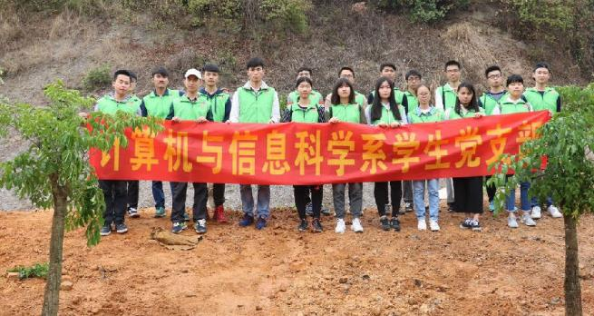

2017年3月12日，为了弘扬雷锋无私奉献的精神,充分宣传低碳出行、绿色环保的理念，计信系党支部组织学生党员、
党建小组以及计信系团总支志愿队一起进行了本学期第一次党日活动。 在本次活动中，党员同志们担任了松湖广场
举行的“松山湖百人骑行植树活动”志愿者，主要对活动进行秩序维持和植苗栽种等工作。周末的懒散丝毫挡不住同志
们满满的干劲，清晨8:00，大家便早早在正门集合，怀着期待的心情坐车奔赴活动现场。大约11:00，骑行活动的参
与者开始出发，我们的志愿者同志保持着饱满的精神立于路旁，积极为参与者指示方向，看见面露迷惑的参与者立即
主动上前询问。在志愿者们的指点下，参与者们准确的找到了道路，沿着绿道有序安全的完成了此次骑行活动。在活
动中，为了保证每个参与者的安全与现场秩序，大家不怕辛苦，纷纷投入骑行队伍，为人们保驾护航。 接着在工作人
员指导下，各位同志开始了极富环保意义的植树活动。在植树过程中，大家小心认真地栽下树苗，为一棵棵新的生命
浇下生存之水。大家感到这不只是种下一棵树，更是为现场的每一个人心中种下了一颗环保的种子，为地球母亲贡献
了一抹绿色。 在小树苗获得生长的养料后，此次党日活动也渐渐到达了尾声。虽然此次活动很短暂，但同志们都体会
到了无私贡献的快乐，用自身行为去弘扬雷锋精神，也宣传了绿色环保的理念，树立党员先锋模范作用。希望大家在
以后的生活中，能继续为他人带来帮助，为地球母亲带来美好的环境，传递正能量！